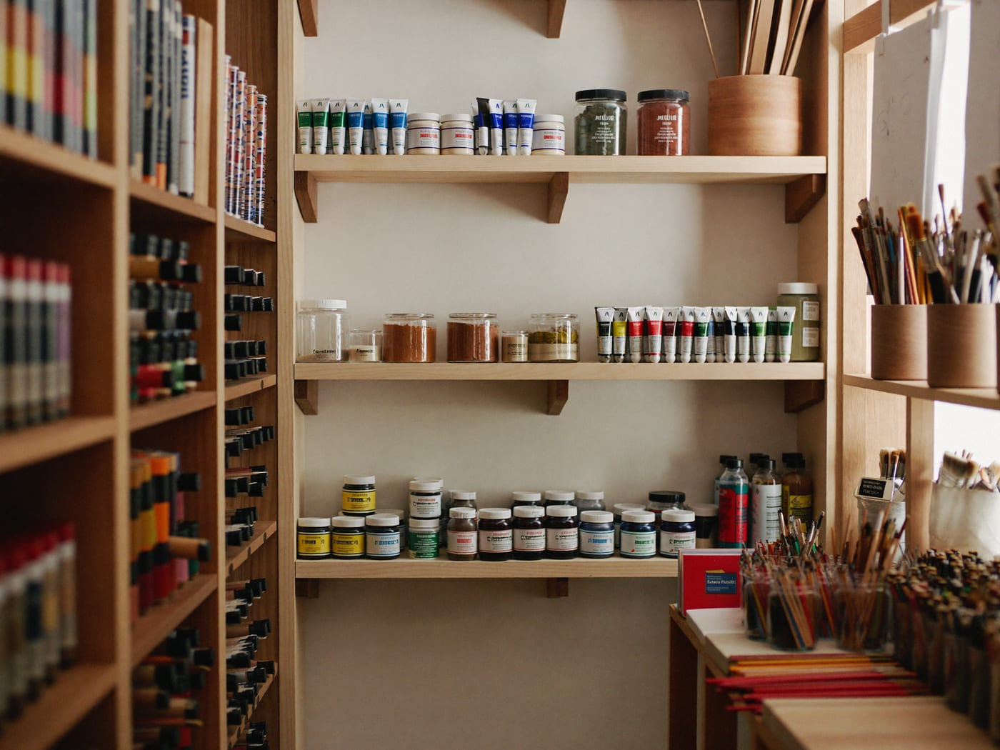
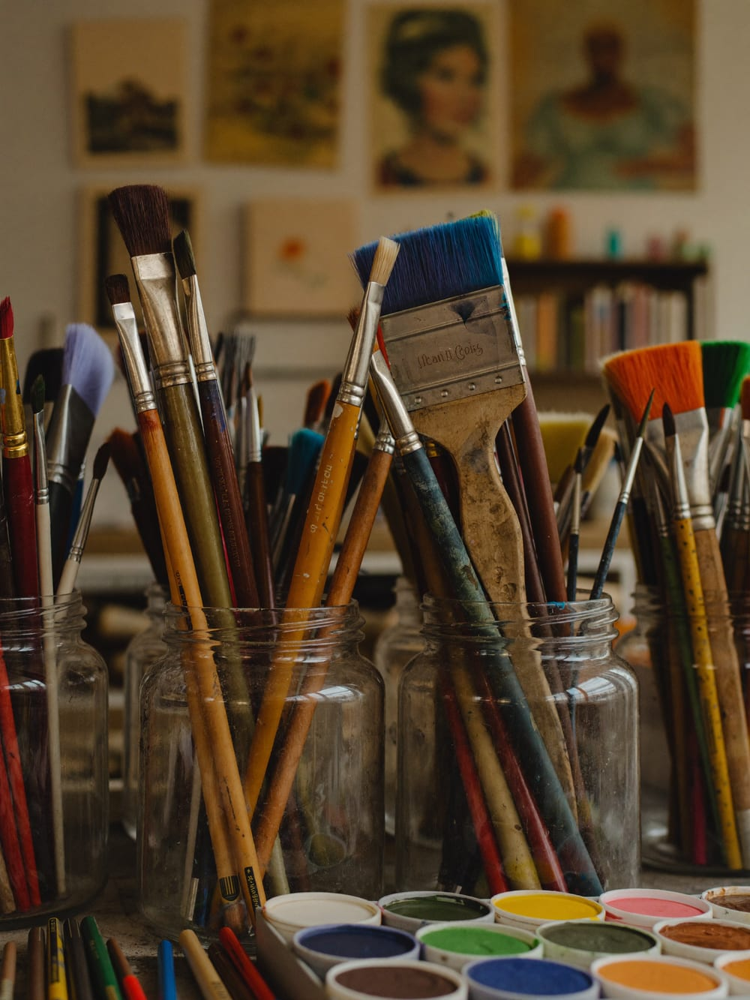

Colori
Olio, acrilici, acquerelli, tempere, pigmenti puri e colori naturali ecologici.
// Belle Arti · Disegno · Grafica · dal 1990
Dal 1990, in Via Averardo Buschi, Giuseppe tiene una piccola bottega piena fino al soffitto: colori, pennelli, tele, carta e disegno delle migliori marche. Piccola di misura, immensa per assortimento — e per i consigli.


// La bottega · dal 1990
Il Colorificio Grossich è la bottega di Giuseppe Comerio: dal 1990, all'angolo tra Via Buschi e Via Grossich, un vero paradiso per gli artisti. Un vasto assortimento delle migliori marche per belle arti, disegno tecnico e artistico, grafica e pittura.
Non un grande magazzino, ma una bottega di quartiere dove ogni cosa ha il suo posto — e dove l'esperienza di tanti anni con prodotti e tecniche diventa il consiglio giusto al momento giusto.
// I reparti
Olio, acrilici, acquerelli, tempere, pigmenti puri e colori naturali ecologici.
Matite, pastelli, carboncini, inchiostri, china e tutto per lo schizzo e l'illustrazione.
Materiali per grafica, disegno tecnico, scuola e hobby creativi.
Tele, carta da schizzo e per acquerello, cavalletti, telai e materiali per modellismo.
Le migliori marche del settore. Non trovi qualcosa? Si ordina e si prepara per te.
// Il consiglio giusto
La differenza di una bottega vera è chi c'è dietro il bancone. Qui il titolare è paziente con le mille domande dei clienti e sa consigliare l'acquisto più idoneo — che tu sia un professionista o alle prime armi.
// Le voci
Ottimo negozio: il titolare è paziente con le mille domande dei clienti e sa consigliare l'acquisto più idoneo.
Stefy Ro · ★★★★★
Molto cordiale e disponibile. Ottima selezione e ottimi consigli.
Artmic · ★★★★★
Cortesia e professionalità oltre le aspettative.
Fortuna · ★★★★★
Fornitissimo!
Milena Zucca · ★★★★★
Gentili e competenti.
Arianna Maih · ★★★★★
// Dove siamo
La mappa è di Google: aprendola, Google riceve il tuo indirizzo IP e può usare i suoi cookie.
// FAQ
In Via Averardo Buschi 20, all'angolo con Via Grossich, a Lambrate (Milano), vicino a MM2 Lambrate.
Da lunedì a venerdì 9–13 e 14:30–19, sabato 9:30–13 e 15–19. Domenica chiuso.
Articoli per belle arti, disegno, grafica e pittura delle migliori marche: colori a olio, acrilici, acquerelli, pigmenti, pennelli, pastelli, matite, tele, carta, cavalletti e altro, anche colori naturali ecologici.
Sì: si può ordinare via WhatsApp al 328 034 0337 e ritirare in negozio. Per informazioni, chiama lo 02 2361543.